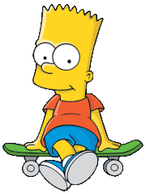

Бартоломью Джо-Джо «Барт» Симпсон (англ. Bartholomew Jo-Jo «Bart» Simpson) — герой мультипликационного сериала «Симпсоны». Наряду с Гомером, один из наиболее известных персонажей шоу. В списке пятидесяти лучших мультипликационных героев в истории по версии журнала TV Guide занимает 11-ю строчку совместно со своей сестрой Лизой. Барт впервые появился на экране 19 апреля 1987 года в короткометражной серии «Good Night». Получил своё второе имя в честь своего двоюродного деда и дяди Мардж
